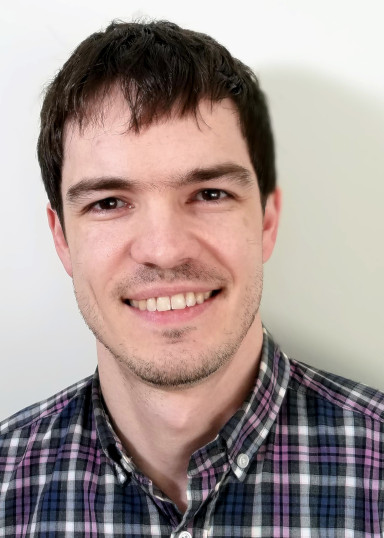

Department of Linguistics, Rutgers University
Rm 205A, 18 Seminary Pl, New Brunswick, NJ
adam.jardine@rutgers.edu
 I'm an Assistant Professor at the Rutgers Department of Linguistics. I'm primarily interested in computational and mathematical approaches to phonological theory.
|
|
|
Wed 1:30-2:30pm
Thu 3-4pm
Until further notice, all student meetings, including office hours, will be held via WebEx. If you're interested in meeting with me, please email me for the link.